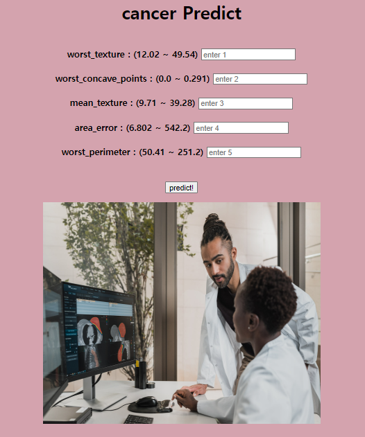

Flask(플라스크) 활용한 머신러닝 웹 서비스 구축
학습 목표
가. Flask를 활용한 머신러닝 웹 서비스를 구현할 수 있다.
나. cancer(위스콘신 암) 데이터 분류 데이터 셋을 활용한다.
다. lightgbm 모델과 logisticRegression 모델을 활용해 본다.
학습 내용
가. 가상환경 만들기
나. 필수 라이브러리 설치
다. 전체 폴더 구조
라. cancer.py 소스 코드
마. flask_app 소스 코드
사. start.html 소스 코드
아. after.html 소스 코드
자. 실행
목차
가. 가상환경 만들기
conda create -n flask_house python=3.8
conda activate flask_house
나. 필수 라이브러리 설치
[방법1] requirements.txt 가 있을 경우,
pip install -r requirements.txt
requirements.txt 내용
Flask
Jinja2
scikit-learn
scipy
numpy
pandas
[방법2]
pip install flask==2.1.3 Jinja2
pip install scikit-learn seaborn pillow imageio pandas virtualenv
pip install numpy==1.23.1
[리스트 확인]
conda list
(flask_house) C:\Users\totofriend>conda list
# packages in environment at C:\Users\totofriend\anaconda3\envs\flask_house:
#
# Name Version Build Channel
ca-certificates 2022.07.19 haa95532_0
certifi 2022.9.24 py38haa95532_0
click 8.1.3 pypi_0 pypi
colorama 0.4.5 pypi_0 pypi
contourpy 1.0.5 pypi_0 pypi
cycler 0.11.0 pypi_0 pypi
distlib 0.3.6 pypi_0 pypi
filelock 3.8.0 pypi_0 pypi
flask 2.1.3 pypi_0 pypi
fonttools 4.37.4 pypi_0 pypi
importlib-metadata 5.0.0 pypi_0 pypi
itsdangerous 2.1.2 pypi_0 pypi
jinja2 3.1.2 pypi_0 pypi
joblib 1.2.0 pypi_0 pypi
kiwisolver 1.4.4 pypi_0 pypi
markupsafe 2.1.1 pypi_0 pypi
matplotlib 3.6.1 pypi_0 pypi
numpy 1.23.1 pypi_0 pypi
openssl 1.1.1q h2bbff1b_0
packaging 21.3 pypi_0 pypi
pandas 1.5.0 pypi_0 pypi
pip 22.2.2 py38haa95532_0
platformdirs 2.5.2 pypi_0 pypi
pyparsing 3.0.9 pypi_0 pypi
python 3.8.13 h6244533_0
python-dateutil 2.8.2 pypi_0 pypi
pytz 2022.4 pypi_0 pypi
scikit-learn 1.1.2 pypi_0 pypi
scipy 1.9.2 pypi_0 pypi
seaborn 0.12.0 pypi_0 pypi
setuptools 63.4.1 py38haa95532_0
six 1.16.0 pypi_0 pypi
sqlite 3.39.3 h2bbff1b_0
threadpoolctl 3.1.0 pypi_0 pypi
vc 14.2 h21ff451_1
virtualenv 20.16.5 pypi_0 pypi
vs2015_runtime 14.27.29016 h5e58377_2
werkzeug 2.2.2 pypi_0 pypi
wheel 0.37.1 pyhd3eb1b0_0
wincertstore 0.2 py38haa95532_2
zipp 3.9.0 pypi_0 pypi
다. 전체 폴더 구조
[리스트 확인]
----[폴더명]
----- [폴더] static
----- [폴더] templates
----- cancer.py
----- flask_app.py
cancer.py : 파일을 불러오고, 실제 모델 구축 후, 이를 pickle 파일로 저장한다.
flask_app.py : cancer.py에서 모델 학습 후, 모델을 저장한 pickle파일을 불러온다. 웹 서비스를 띄우고 html 웹 페이지를 연결시킨다. Flask App를 띄운다.
----- [폴더] static : 참조할 이미지 폴더. 이곳에서 이미지를 불러와 웹에서 보여주게 된다.
(예) hospital_unsplash.jpg
----- [폴더] templates : 첫 웹 페이지와 데이터 입력 후, 실행될 웹 html 파일 저장 폴더
start.html, after.html
라. cancer.py 소스 코드
import pandas as pd
import pickle
import time
import sklearn as sk
from sklearn.model_selection import train_test_split
from sklearn.linear_model import LogisticRegression
from sklearn.ensemble import VotingClassifier
import lightgbm as lgbm
from lightgbm import LGBMClassifier
from sklearn.datasets import load_breast_cancer
start_time = time.time()
print("LGBM Version : ", lgbm.__version__)
print("Pandas Version : ", pd.__version__)
print("Scikit-Learn Version : ", sk.__version__)
cancer = load_breast_cancer()
cancer_df = pd.DataFrame(cancer.data, columns=cancer.feature_names)
print(cancer_df.columns)
# 피처와 레이블를 지정.
sel = ['worst texture', 'worst concave points', 'mean texture', 'area error', 'worst perimeter']
X = cancer_df[sel]
y = cancer.target
print("worst texture : (min max) : ", cancer_df['worst texture'].min(), cancer_df['worst texture'].max())
print("worst concave points : (min max) : ", cancer_df['worst concave points'].min(), cancer_df['worst concave points'].max())
print("mean texture : (min max) : ", cancer_df['mean texture'].min(), cancer_df['mean texture'].max())
print("area error : (min max) : ", cancer_df['area error'].min(), cancer_df['area error'].max())
print("worst perimeter : (min max) : ", cancer_df['worst perimeter'].min(), cancer_df['worst perimeter'].max())
X_train , X_test, y_train, y_test = train_test_split(X, y, test_size=0.2, random_state=0)
# 모델 선택
model_lgbm = LGBMClassifier(n_estimators= 400)
evals = [(X_test, y_test)]
model_lgbm.fit(X_train, y_train, early_stopping_rounds=100, eval_metric='logloss',
eval_set=evals, verbose=True)
model_logit = LogisticRegression()
model_logit.fit(X_train, y_train)
print("lgbm 모델 정확도 : ", model_lgbm.score(X_test, y_test))
print("로지스틱회귀 모델 정확도 : ", model_logit.score(X_test, y_test))
vo_clf = VotingClassifier( estimators=[("logitlr", model_logit) ,
("lgbm", model_lgbm)] , voting='soft')
vo_clf.fit(X_train, y_train)
print("lgbm and 로지스틱회귀 앙상블 모델 정확도 : ", vo_clf.score(X_test, y_test))
pickle.dump(model_lgbm, open('cancer_lgbm_logit.pkl', 'wb'))
print("시간 (초): ", time.time() - start_time )
결과
[139] valid_0's binary_logloss: 0.21475
[140] valid_0's binary_logloss: 0.21539
[141] valid_0's binary_logloss: 0.214627
lgbm 모델 정확도 : 0.9473684210526315
로지스틱회귀 모델 정확도 : 0.9649122807017544
lgbm and 로지스틱회귀 앙상블 모델 정확도 : 0.9473684210526315
시간 (초): 0.2852025032043457
pkl 파일로 모델이 저장된다.
마. flask_app 소스 코드
from flask import Flask, render_template, request
import pickle
import numpy as np
import os
# # 01 학습된 모델 가져오기
mydir = os.getcwd()
print(mydir)
# pickle_file = os.path.join(mydir, 'mysite', 'cancer_lgbm_logit.pkl') # pythonAnywhere 의 경우
pickle_file = os.path.join(mydir, 'cancer_lgbm_logit.pkl')
print(pickle_file)
with open(pickle_file, 'rb') as pkl_file:
model = pickle.load(pkl_file)
# 02 플라스크 사용을 위한 준비
app = Flask(__name__)
# 03 플라스크 앱의 루트 디렉터리를 초기화
@app.route('/')
def main():
return render_template('start.html')
# 04 초기 웹 페이지에서 submit 했을 때 실행
# request.form['']을 사용하여 HTML 페이지에서 입력한 데이터를 가져온다.
# model.predict()를 통해 클래스를 예측한다.
# 예측값에 따라 어떤 텍스트와 이미지를 보낼지, after.html에 설정.
@app.route('/predict', methods=['POST'])
def home():
# html의 입력한 값을 넘겨받는다.
val1 = request.form['a']
val2 = request.form['b']
val3 = request.form['c']
val4 = request.form['d']
val5 = request.form['e']
val1 = float(val1); val2 = float(val2);
val3 = float(val3); val4 = float(val4); val5 = float(val5)
arr = np.array([[val1, val2, val3, val4, val5]])
pred = model.predict(arr)
# 렌더링할 html 파일명, 전달할 변수
return render_template('after.html', data=pred)
# 05 직접 실행된 경우, 앱을 디버그 on 모드로 실행
if __name__ == "__main__":
app.run(debug=True)
사. start.html 소스 코드
<html>
<body bgcolor=#d4a3ae>
<center>
<h1> cancer Predict </h1><br>
<form method="POST", action="{{url_for('home')}}">
<b> worst_texture : (12.02 ~ 49.54) <input type="text", name='a', placeholder="enter 1"> <br><br>
worst_concave_points : (0.0 ~ 0.291) <input type="text", name='b', placeholder="enter 2"> <br><br>
mean_texture : (9.71 ~ 39.28) <input type="text", name='c', placeholder="enter 3"> <br><br>
area_error : (6.802 ~ 542.2) <input type="text", name='d', placeholder="enter 4"> <br><br>
worst_perimeter : (50.41 ~ 251.2) <input type="text", name='e', placeholder="enter 5"> <br><br><br></b>
<input type="submit" , value='predict!' >
</form>
<img src='static\hospital_unsplash.jpg' alt="cancer_find" width="500" height="400">
</center>
</body>
</html>
flask_app를 실행한 이후의 웹 페이지 접속 화면

아. after.html 소스 코드
<html>
<body bgcolor=#a3cfb4>
<center>
<h1> 예상 결과 악성 종양(암)일까요? 양성 종양일까요? </h1>
{%if data == 0%}
<h1>no cancer</h1>
<img src='static\nocancer.jpg' width="500" height="500">
{%endif%}
{%if data == 1%}
<h1>cancer</h1>
<img src='static\cancer.jpg' width="500" height="500">
{%endif%}
<br><br>
<a href='/'>go back to home page</a>
</center>
</body>
</html>
_Cancer_files/image [1].png)
자. 실행
01. cancer.py을 실행
* 데이터를 불러옵니다. 모델을 지정한 이후에 학습을 진행합니다. 학습, 평가, 모델 저장하면, 학습된 모델 파일이 저장됩니다.
02. flask_app.py을 실행
* 모델을 불러오고, flask app을 실행시킵니다. 정상적인 실행이 완료되면 아래와 같이 접속 가능한 web url이 보여집니다.
* Serving Flask app 'flask_app' (lazy loading)
* Environment: production
WARNING: This is a development server. Do not use it in a production deployment.
Use a production WSGI server instead.
* Debug mode: on
WARNING: This is a development server. Do not use it in a production deployment. Use a production WSGI server instead.
* Running on http://127.0.0.1:5000
Press CTRL+C to quit
* Restarting with watchdog (windowsapi)
* Debugger is active!
03. 웹페이지 URL을 웹 사이트에 입력
_Cancer_files/image [2].png)
04 입력란에 값을 입력 후, 'predict!'를 버튼을 선택하면 예상 결과가 나오게 됩니다.
_Cancer_files/image [3].png)
_Cancer_files/image [4].png)
_Cancer_files/image [5].png)
입력된 값을 토대로 암인지 아닌지 예측 결과를 보여주게 됩니다.